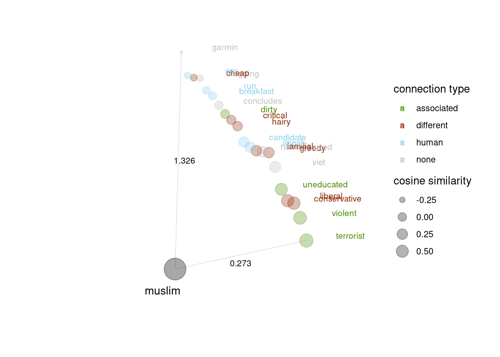
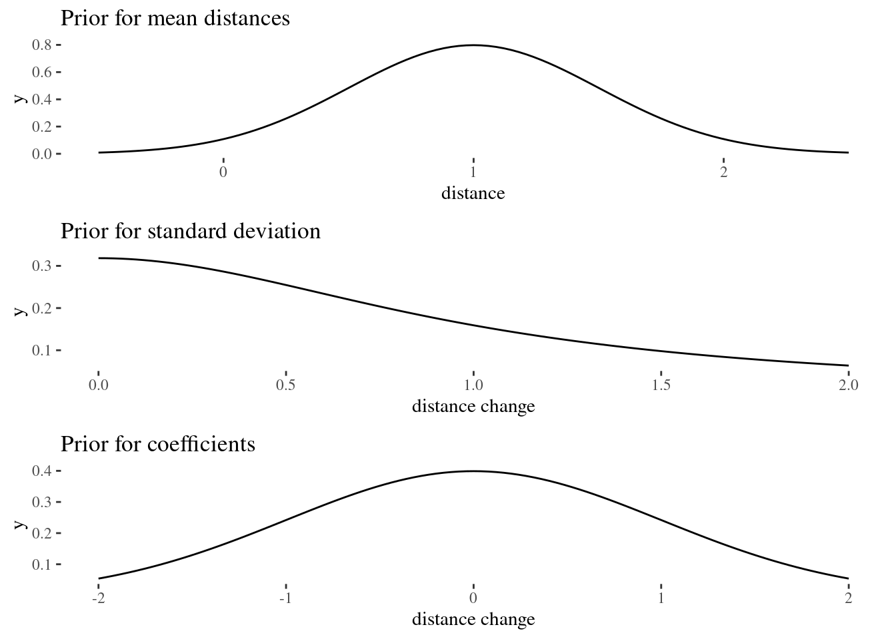

2 Cosine similarity and bias detection
2.1 Word embeddings
To get a proper understanding of what cosine similarity measurement is, one first needs to be introduced with the concept of word embeddings. Word embeddings are a class of various techniques that allow us to represent words as vectors. This learned representation of text has certain properties - such as storing similar words close to each other in a vector space. Word embeddings return a dense distributed representation of individual words which in reality might involve from tens to hundreds of dimensions. One can understand distributed representation as an opposite of localist representation used in one-hot encoding. In the latter, each vector contains information only about a single data point. It is achieved by first mapping categorical values (words) to integer ones and then for each integer value a binary vector is assigned. The vector has only 0’s except for the index of the integer which is given 1.
An example of localist representation:
cat -> [0 0 0 0 0 1]
In contrast to this process, distributed representation returns vectors that have continuous values instead of discrete 1s and 0s.
An example of distributed representation:
cat -> [0.345 0.345 0.567 0.413 0.390 0.124]
One of the advantages of using distributed representation is that one is able to represent an enormous amount of concepts with a smaller number of units. It is also able to indicate similarities better as words of similar meanings can have similar numeric vectors.
Word embeddings have many applications in natural language processing area. They are handy in document search and information retrieval. They also have their part in improving automatic translations. Additionally well-learnt word representations may contribute to the betterment of sentiment analysis or spam detection.
2.2 Cosine similarity and distance
Cosine similarity is a method for finding whether vector representations for two words suggest that they are similar or somehow connected. Cosine similarity is the cosine of the angle between two vectors: the result of dividing dot product of the vectors by the product of their magnitudes.
\[\begin{align} \tag{Sim} \mathsf{cosineSimilarity}(A,B) & = \frac{A \cdot B}{\vert \vert A \vert \vert \,\vert \vert B \vert \vert} \end{align}\]Cosine is a proper tool for this operation as its result refers directly to the nature of vectors and additionally may be easily interpreted. Using this scale, one can compare vectors similarities in a clear manner. When the vectors are aligned perpendicularly to each other then their similarity equals 0 which is the same as cosine from 90 degrees. It tells us that the similarity is very insignificant. And as the angle between them gets smaller and smaller, the value from cosine application is approaching one, which stands for the greatest similarity.
One of this measure limitation is that it informs us only about similarities between vectors in terms of their orientation. However it seems that in comparing words in terms of this metric, the magnitude of vectors may be treated as irrelevant, as the most important information pertains to the direction of the vectors. This relies on the assumption that similarity is greatest when vectors occupy the same relative proportion of each vector subspace.
In what follows, it is important to distinguish between cosine similarity and cosine distance concepts. Cosine distance formula is simply:
\[\begin{align} \tag{Sim} \mathsf{cosineDistance}(A,B) & = 1 - \mathsf{cosineSimilarity}(A,B)\\ & = 1 - \frac{A \cdot B}{\vert \vert A \vert \vert \,\vert \vert B \vert \vert} \nonumber \end{align}\]The greater the similarity between two vectors the smaller the distance between them.
2.3 Cosine distance in a multi-class bias detection
In the article "Black is to Criminal as Caucasian is to Police: Detecting and Removing Multiclass Bias in Word Embeddings" the authors present an interesting approach towards finding similarities between classes of words.
The authors claim that available online texts are full of direct or indirect human stereotypes. As a result, word embeddings are prone to learn and maybe amplify those biases and propagate them further into AI models that are used for various applications. Cosine distance is used in the article as a measure to first prove multi-class bias existence and then to show how through bias mitigation techniques it may be decreased. There are various steps in the process but the main once are shortly described below.
- Mean cosine distance:
def _unary_s(embeddings, target, attributes):
return np.mean([spatial.distance.cosine(embeddings[target],
embeddings[ai]) for ai in attributes])It is used to identify similarities between protected words and a list of attributes. After finding mean distance between each protected word a number of other words, one takes a mean of all of those means to return one value for a whole class (like eg. religion class biases).
Principal component analysis is used to identify bias subspace. In details the bias subspace process is as follows:
- Create list of embeddings for eg. he/she word
- Take a mean of these embeddings
- Add to a list
- Repeat for all groups (like his/her, brother/sister etc.)
- From each pair substract their mean
- Create matrix of all pairs (if 7 pairs with 50 dimensions each, then matrix is equal to 14x50)
- Use PCA on matrix with n_components=2
- The returned pca.components_ is a bias subspace
Bias component is removed by using either hard debiasing or soft one. Hard debiasing is a proces of completely remove subspace components from embedding; it consists of two steps, first from neutral words the bias components are removed, second gendered word embeddings have their bias components equalized, which means that for example in terms of "man" and "woman" vectors, their bias components should be in opposite directions with same length of magnitude. In turn, soft debiasing is a partial removal of subspace components from embedding.
How are the multi-class biases actually defined? The authors take a list of alleged biases towards protected groups like gender, race, religion from various scientific reports. The multi-class bias existence is further proved by providing the reader with the value of a mean from the cosine similarity between protected word and list of of previously defined biases.
Now let us analyse the details of the solution that uses cosine similarity. As the code for the whole solution is provided I was able to reconstruct the exact same results that they obtained. Having the source code enabled me to see the details behind solution and analyse each step and each calculated value to state own claims and doubts. The below analysis concerns the usage of cosine similarity in proving biases and their mitigation.
The example refers to the process of hard debiasing on religious attributes.
- First we load word embeddings from reddit.US.txt.tok.clean.cleanedforw2v.w2v dataset
- word embeddings have 50 dimensions only
- the amount of individual words from the dataset equals 44895
- Words that are supposed to be neutral but are biased towards some religion:
['greedy', 'cheap', 'hairy', 'liberal', 'judgemental', 'conservative',
'familial', 'violent', 'terrorist', 'dirty', 'uneducated']- On the bases of definite sets the bias subspace is defined:
[["judaism", "christianity", "islam"],
["jew", "christian", "muslim"],
["synagogue", "church", "mosque"],
["torah", "bible", "quran"],
["rabbi", "priest", "imam"]]Next function
neutralize_and_equalizeis applied. From previously defined neutral words only the bias subspace is substracted. The second step concerns equalizing protected words (like christianity, islam etc.) themselves.Then there is a multiclass evaluation. They check each protected attribute with each group of "biased neutral words." Then they do each time mean from the cosine distances from protected word to neutral words. Then they do a mean from all of these means to return one value. If the returned value of cosine distance is greater than the one calculated at the very beginning then it means that the bias was removed as the similarity between stereotypical word and the protected one decreased.
2.4 Limitations of the approach
The attributes are taken from different sources, therefore there is no one justification for their choice.
In the article there is no mention of methodology for deciding on the number of attributes necessary to prove a hypothesis on the given size of dataset. There are however some ways to estimate how many samples we need to make sure that the result is significant.
The authors use the mean average cosine similarity to check on multi-class similarity between protected word and harmful stereotypes. Details of the process are described as follows.
When one calculates individual cosine similarity between some chosen word like "christianity" and neutral attributes that are supposed to be biased are actually often having very small and negative similarity value. As a result the measurement cosine distance is for such pair of words greater than 1. According to some sources (find sth better than issue on github) when the value exceeds 1 it means that it is not a good measure for the case as the words seem to have no similarity or whatsoever.
Doing a mean hides this issue and as there are pairs having negative and small similarities and there are those that have similarity equal to 0.5, the resulting calculation seems to be in norm.
Assuming for a moment that the value of multi-class cosine distance is correct, one may question the results' interpretation. In [Black is to Criminal as Caucasian is to Police:Detecting and Removing Multiclass Bias in Word Embeddings] Table 2, there are summarized the averages of cosine distance per group (gender, race, religion). I would like to focus now on analyzing the values relating to religious biases. Here is the fragment of table that refers to that:
| Religion Debiasing | MAC |
|---|---|
| Biased | 0.859 |
| Hard Debiased | 0.934 |
| Soft Debiased (\(\lambda\) = 0.2) | 0.894 |
MAC stand for mean average cosine similarity although in reality the values of cosine distance are there stored. What may attract attention is the fact that the value of cosine distance in "Biased" category is already quite high even before "debiasing". High cosine distance indicates low cosine similarity between values. One could think that average cosine similarity equal to approximately 0.141 is not significant enough to consider it as biased. However the authors aim to mitigate "biases" in vectors with such great distance to make it even larger. Methodologically there is a question on what bases this small similarity is still considered as a proof of bias presence.
Curse of dimensionality may take place when there is an increase in volume of data that results in adding extra dimensions to the Euclidean space. According to the article "https://analyticsindiamag.com/curse-of-dimensionality-and-what-beginners-should-do-to-overcome-it/" as the number of features increases, it may be harder and harder to get useful information from the data with the usage of available algorithms. One may notice that more data should contribute to greater amount of information but more information also means greater risk of noise and distractions in data. At the same time, many times modern solutions are adapted to smaller dimensions and their results in higher ones are not intuitive or may be prone to be mistaken.
Using cosine similarity in high dimensions in word embeddings may also be prone to the curse of dimensionality. According to this article "https://www.researchgate.net/publication/327498046_The_Curse_of_Dimensionality_Inside_Out" there are reasons to consider this phenomenon when searching for word similarities in higher dimensions.
In the article an experiment is conducted that aims at showing how the similarity values and variation change as the number of dimensions increases. The hypothesis made in the paper states that two things will happen as the number of dimensions increase, the first one is that effort required to measure cosine similarity will be greater and the second one is that the similarity between data will blur out and have less variation. In details, the authors generate random points with increasing number of dimensions where each dimension of a data point is given a value between 0 and 1. Then they pick one vector on random from each dimension class and calculate cosine similarity between chosen vector and the rest of the data. Then they check how the variation of values changes as the number of dimensions increases. It seems like the more dimensions there are, the smaller the variance and therefore less reliable the cosine similarity value.

curse of dimensionality, on x-axis number of dimensions, on y-axis standard deviation of similarity
How to properly prepare control group in terms of quality and quantity?
Besides cosine similarity, there are other methods used to find the similarity between vectors.
2.5 One class gender bias with cosine similarity: a case study
2.7 Walkthrough with the religion dataset
We will use the choice of protected words and stereotypical predicates used in REF. This choice is to some extent problematic, because the choice of protected classes and stereotypical predicates is not principled and is not clearly based on psychological and sociological research. However, is a decent point of departure, especially since we want to compare our method to that of REF. It is also worth keeping in mind that the method we develop takes a list of protected words and associated stereotypical predicates as an input, so the reader can fairly easy run the analysis for a different stereotypization pattern. At this stage, we will explain the method and its deployment using a dataset obtained for the religion-related protected classes. First, we load the required packages.
library(ggplot2)
library(ggthemes)
library(rethinking)
library(tidyverse)
library(ggpubr)
library(kableExtra)
library(dplyr)
library(ggExtra)
library(cowplot)Now let's load, clean a bit and inspect the head of the religion dataset we prepared DESCRIBE THE PREPARATION.
religion <- read.csv("cosineAnalysis/datasets/religionReddit.csv")[-1]
colnames(religion) <- c("protectedWord","wordToCompare","wordClass",
"cosineDistance","cosineSimilarity","connection")
levels(religion$wordClass) <- c("christian","human","jewish","muslim","neutral")
head(religion) %>% kable(format = "latex",booktabs=T,
linesep = "", escape = FALSE,
caption = "Head of the religion dataset.") %>%
kable_styling(latex_options=c("scale_down"))EXPLAIN THE COLUMNS
We will be using "connection" as a predictor. For technical reasons it is useful to represent an \(n\)-level factor with \(n-1\) binary vectors. connection in this case have four levels EXPLAIN WHY HUMAN AND CONTROL THIS IS CRUCIAL! We add them to the dataset.
religion$associated <- ifelse(religion$connection == "associated", 1, 0)
religion$different <- ifelse(religion$connection == "different", 1, 0)
religion$human <- ifelse(religion$connection == "human", 1, 0) We wrote a short script, cleanDataset to make this faster, so equivalently we could just say:
source("cosineAnalysis/functions/cleanDataset.R")
religion <- read.csv("cosineAnalysis/datasets/religionReddit.csv")[-1]
religion <- cleanDataset(religion,c("christian","human","jewish","muslim","neutral"))First let's take a look at the empirical distribution of distances by the connection type.
The impression is that EXPLAIN and EXPLAIN WHY STILL WE NEED STATISTICAL ANALYSIS
For now, let's focus on a single protected class, muslim. with which the word list associates five protected words. First, we select and plot the empirical distributions for this subset.
#levels(religion$protectedWord) you can inspect the list of protected words first
muslimWords <- c("imam","islam","mosque","muslim","quran")
muslim <- religion %>% filter(protectedWord %in% muslimWords)
ggplot(muslim, aes(x = cosineDistance, fill = connection))+
geom_density(alpha=0.2,size = .2)+
theme_tufte()+ggtitle("Empirical distribution of distances (muslim)")
Say we want to look at a single protected word. Now, since the dataset also contains comparison multiple control words, we randomly select only 5 from none and 5 from human control groups of those for the visualisation purposes.
muslimClass <- muslim %>% filter(protectedWord == "muslim")
neutralSample <- sample_n(filter(muslimClass,connection == "none"), 5)
humanSample <- sample_n(filter(muslimClass,connection == "human"), 5)
muslimVis <- muslimClass %>% filter(connection != "none" & connection !="human")
muslimVis <- rbind(muslimVis,neutralSample,humanSample)
#we plug in our visualisation script
source("cosineAnalysis/functions/visualisationTools.R")
#two arguments: dataset and protected word
visualiseProtected(muslimVis,"muslim")
We will now think of cosine distance as the output variable, and will build four bayesian models. In the one we'll be ultimately concerned with,cosineDistance is normally distributed around the predicted mean \(\mu\), the predicted mean is a linear function of a baseline value no, associated with coefficient \(a\), different with coefficient d, and human with coeficient h.
\[\begin{align}
\mu & = \mathsf{no} + a \times \mathsf{associated} + d \times \mathsf{different} + h \times \mathsf{human}
\end{align}\]
In other word, the idea is that residuals are normally distributed (with estimated standard distribution \(\sigma\)) around the predicted mean, no is an estimated mean for connections with neutral words, \(a\) is an estimated change in no if associated is activated (has value 1), \(d\) is an estimated change in no if different is activated (has value 1), and \(h\) is an estimated change in no if human is activated. The model parameters will have a posterior distribution obtained using either monte carlo methods or quadratic approximation (if multiple estimations are needed, this significantly improves computation time and only slighlty underestimates uncertainty) available through the rethinking package.
SAY MORE ABOUT THE PARAMETER DISTRIBUTIONS FOR THE PRIORS

The simpler models either simply estimate the mean for the whole dataset and add predictors in a step-wise manner. The reason we construct them is that we first want to make sure that considering all the leves of connection actually has predictive value. We will construct these models for "muslim" and compare them. For now, we will use a computationally less demanding quandratic approximation (approximating the posterior with a normal distribution). Here are the models:
library(rethinking)
muslim.null <- rethinking::map(
alist(
cosineDistance ~ dnorm(mu,sigma),
mu ~ dnorm(1,.5),
sigma ~ dcauchy(0,1)
),
data = muslim,
start=list(mu = 1, sigma= .3)
)
muslim.a <- rethinking::map(
alist(
cosineDistance ~ dnorm(mu,sigma),
mu <- no + a * associated,
no ~ dnorm(1,.5),
a ~ dnorm(0,1),
sigma ~ dcauchy(0,1)
),
data = muslim,
start=list(no = 1, a = 0, sigma= .3)
)
muslim.ad <- rethinking::map(
alist(
cosineDistance ~ dnorm(mu,sigma),
mu <- no + a * associated + d * different,
no ~ dnorm(1,.5),
a ~ dnorm(0,1),
d ~ dnorm(0,1),
sigma ~ dcauchy(0,1)
),
data = muslim,
start=list(no = 1, a = 0, d = 0, sigma= .3)
)
muslim.adh <- rethinking::map(
alist(
cosineDistance ~ dnorm(mu,sigma),
mu <- no + a * associated + d * different + h * human,
no ~ dnorm(1,.5),
a ~ dnorm(0,1),
d ~ dnorm(0,1),
h ~ dnorm(0,1),
sigma ~ dcauchy(0,1)
),
data = muslim,
start=list(no = 1, a = 0, d = 0, sigma= .3)
)We first look at the parameters provided by the models (we need to define a function that converts the precis to the data frame format):
precisToDf <- function (model){
modelDf <- cbind(precis(model)[1],precis(model)[2],
precis(model)[3],precis(model)[4])
return(modelDf)
}
precisToDf(muslim.null) %>% kable(format = "latex",booktabs=T,
caption = "Precis of the baseline model.")precisToDf(muslim.a) %>% kable(format = "latex",booktabs=T,
caption = "Precis of a model with associated as a predictor.")precisToDf(muslim.ad) %>% kable(format = "latex",booktabs=T,
caption = "Precis of a model with associated and different as predictors.")precisToDf(muslim.adh) %>% kable(format = "latex",booktabs=T,
caption = "Precis of the full model.")EXPLAIN HOW TO READ THE COEFFICIENTS AND THE 89 PERCENTILE INTERVALS
Now we can investigate how the models perform (rounding the results to two digits)
round(compare( muslim.null , muslim.a , muslim.ad, muslim.adh ),2)## WAIC SE dWAIC dSE pWAIC weight
## muslim.adh -771.64 57.00 0.00 NA 5.79 1
## muslim.a -741.51 56.83 30.13 10.83 3.66 0
## muslim.ad -739.44 56.81 32.21 10.78 4.88 0
## muslim.null -728.03 57.59 43.61 15.23 1.97 0Clearly, the full model is much better and should be given the full weight. Let's double check if a similar decision should be made if we use the whole religion dataset.
## WAIC SE dWAIC dSE pWAIC weight
## religion.adh -2249.08 101.25 0.00 NA 5.48 1
## religion.ad -2100.89 100.88 148.19 23.45 4.74 0
## religion.a -2097.78 100.82 151.30 23.92 3.68 0
## religion.null -2088.42 101.08 160.66 25.40 1.96 0Quite crucially, note that the Widely Applicable Information Criterion (WAIC) is lowest for the full model and that the weigth assigned to the null model makes in negligible. This indicates that the predictor variables in the full model indeed have predictive power and that in what follows we can ignore the other models.
Now, let's use STAN to build a markov chain monte carlo model with the same parameters for the muslim subsset. For us the practical difference is that the method is computationally a bit more demanding, and that because the model construction avoids quadratic approximation the resulting uncertainty is realistically slightly larger.
options(buildtools.check = function(action) TRUE ) #removes install pop-up request
muslim.adh.st <- map2stan(
alist(
cosineDistance ~ dnorm(mu,sigma),
mu <- no + a * associated + d * different + h * human,
no ~ dnorm(1,.5),
a ~ dnorm(0,1),
d ~ dnorm(0,1),
h ~ dnorm(0,1),
sigma ~ dcauchy(0,1)
),
data = muslim,
chains=2 , iter=4000 , warmup=1000,
start=list(no = 1, a = 0, d = 0, sigma= .3)
)
precisToDf(precis(muslim.adh.st))%>% kable(format = "latex",booktabs=T,
caption = "Precis of the full mcmc model.")EXPLAIN WHAT'S GOING ON IN THE TABLES, DON'T FORGET IT'S HPDI not percentiles now!
We can now take a look at the diagnostic plots, displaying chains for the parameters of interest (what we're looking for is stationarity and a random-walk-like look):
source("cosineAnalysis/functions/plotChains.R")
plotChains(muslim.adh.st)
We can also visualise the coefficients generated by the procedure:
plot(coeftab(muslim.adh.st))
Next, we investigate the uncertainty involved, by working with the samples extracted from the model.
samples <- as.data.frame(extract.samples (muslim.adh.st, n = 1e4 ))
head(samples, n = 6 ) %>% kable(format = "latex",booktabs=T, linesep = "",
caption = "Head of samples extracted from the full mcmc model.")EXPLAIN THIS
Now for each datapoint in the sample we calculate the predicted \(\mu\) for the four categories.
mu.no <- samples$no
mu.a <- samples$no + samples$a
mu.d <- samples$no + samples$d
mu.h <- samples$no + samples$hNext, we can look at the sample posterior means for the categories, first let's inspect them visually.
mus <- data.frame(none = mu.no, associated = mu.a,
different = mu.d, human = mu.h)
musLong <- gather(mus, connection, mu, c(none,associated,different, human),
factor_key=TRUE)
musPlot <- ggplot(musLong, aes(x=connection,y=mu, color = connection,
fill= connection))+
geom_jitter(alpha=0.07)+theme_tufte() +
guides(color = guide_legend(override.aes = list(alpha = 1)))
ggMarginal(musPlot, type = "density", groupColour = TRUE)
Then, let's calculate their means and HPDIs.
data.frame(precis(data.frame(mu.no,mu.a,mu.d, mu.h)))[,-5]## mean sd X5.5. X94.5.
## mu.no 0.9416495 0.004981136 0.9336039 0.9495987
## mu.a 0.7585600 0.042536604 0.6890276 0.8253921
## mu.d 0.9221943 0.032060355 0.8707138 0.9722415
## mu.h 0.8309126 0.018369462 0.8014352 0.8602604hpdis <- rbind(HPDI( mu.no ),HPDI( mu.a ),
HPDI( mu.d ), HPDI( mu.h ))
rownames(hpdis) <- c("none","associated","different","human")
hpdis ## |0.89 0.89|
## none 0.9337161 0.9496828
## associated 0.6896347 0.8256707
## different 0.8722726 0.9735840
## human 0.8004882 0.8591354In our summary visualisation later on, we will represent the information in a slightly different manner. First we put the means in a single dataframe, and then plot the means of means as points and their corresponding HPDIs as lines. For a single protected class this isn't terribly exciting, but it will come useful in a moment.
Now, let's generalize and build a model for all the protected words in the religion class and extract parameters from the model both for the full dataset and each protected word. We'll use a script we wrote for this purpose, feel free to re-run, but be aware that the computation takes some time. For this reason, here we just show you the higher-level code, but in fact use a previously obtained dataframe with the output as we proceed. Here we provide the generating code, but it's commented out, and we load and use the obtained table instead. We'll compare it to the parameters obtained fromt he database based on the Google word2vec embeddings.
#options(buildtools.check = function(action) TRUE )
#source("cosineAnalysis/functions/cleanDataset.R")
#source("cosineAnalysis/functions/evaluateProtected.R")
#religion <- read.csv("cosineAnalysis/datasets/religionReddit.csv")[-1]
#religion <- cleanDataset(religion,c("christian","human",
#"jewish","muslim","neutral"))
#now built it for all protected classes as well
#religionTable <- parTable(religion)
#save(religionTable,file = "cosineAnalysis/datasets/religionTable.RData")
load("cosineAnalysis/datasets/religionTable.RData")
source("cosineAnalysis/functions/visualiseStats.R")
visualiseTable(religionTable)Figure 2.1: Posterior probabilities for the Reddit-based religion dataset.
#options(buildtools.check = function(action) TRUE )
#source("cosineAnalysis/functions/cleanDataset.R")
#source("cosineAnalysis/functions/evaluateProtected.R")
#religionGoogle <- read.csv("cosineAnalysis/datasets/religionGoogle.csv")[-1]
#religionGoogle <- cleanDataset(religionGoogle,c("christian","human",
#"jewish","muslim","neutral"))
#now built it for all protected classes as well
#religionGoogleTable <- parTable(religionGoogle)
#save(religionGoogleTable,file = "cosineAnalysis/datasets/religionGoogleTable.RData")
load("cosineAnalysis/datasets/religionGoogleTable.RData")
source("cosineAnalysis/functions/visualiseStats.R")
visualiseTable(religionGoogleTable)Figure 2.2: Posterior probabilities for the Google-based religion dataset.
Here are analogous results for the gender and race datasets:
Figure 2.3: Posterior probabilities for the Reddit-based gender dataset.
Figure 2.4: Posterior probabilities for the Google-based gender dataset.
Figure 2.5: Posterior probabilities for the Reddit-based race dataset.
Figure 2.6: Posterior probabilities for the Google-based race dataset.